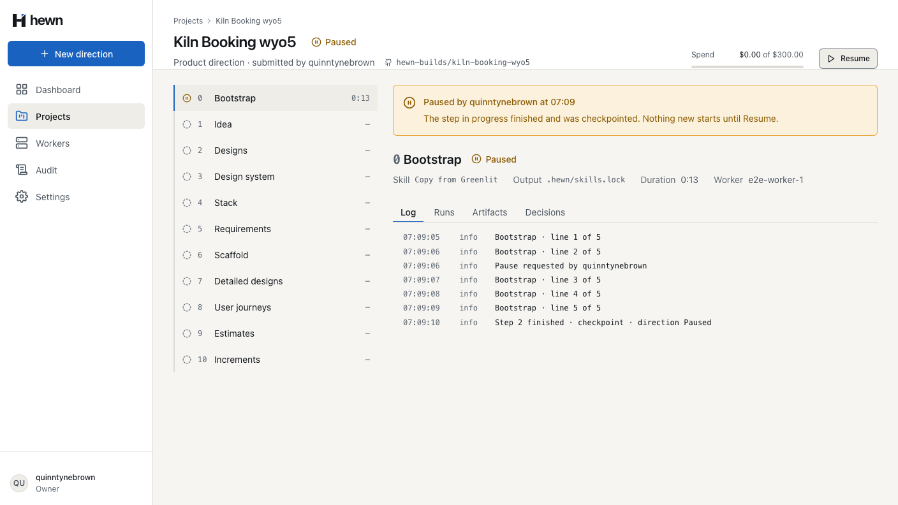
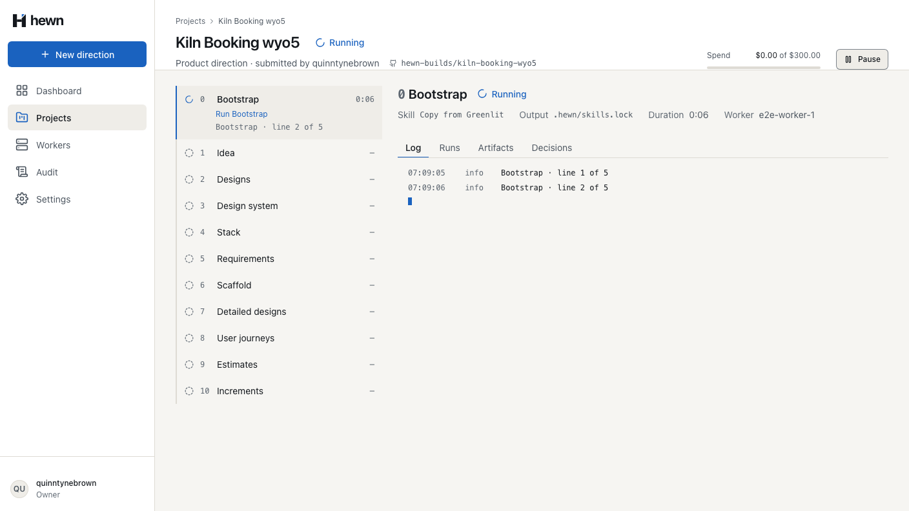
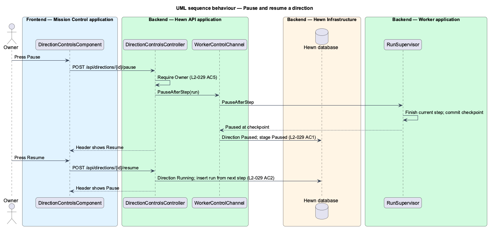
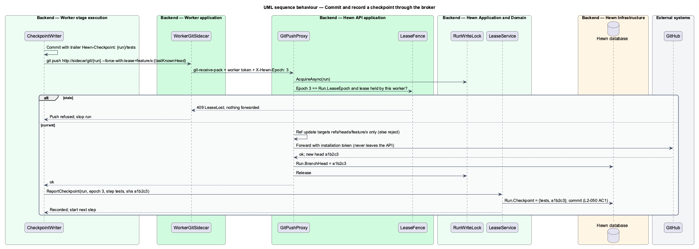
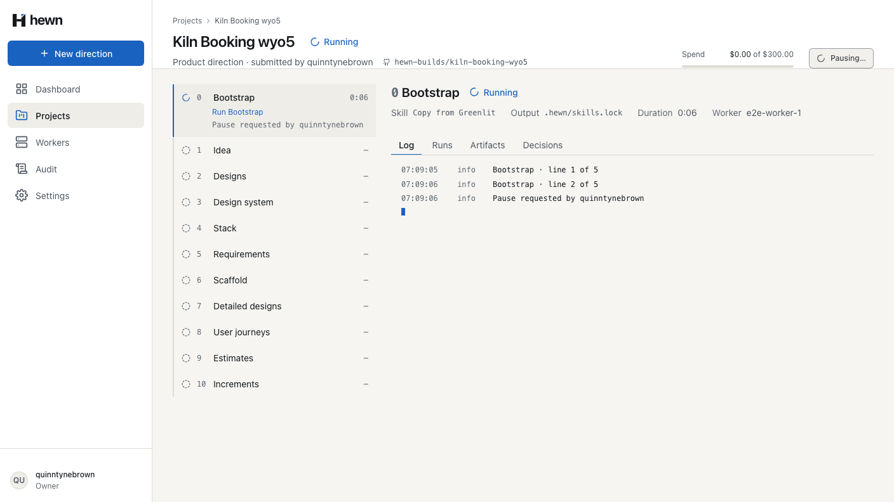
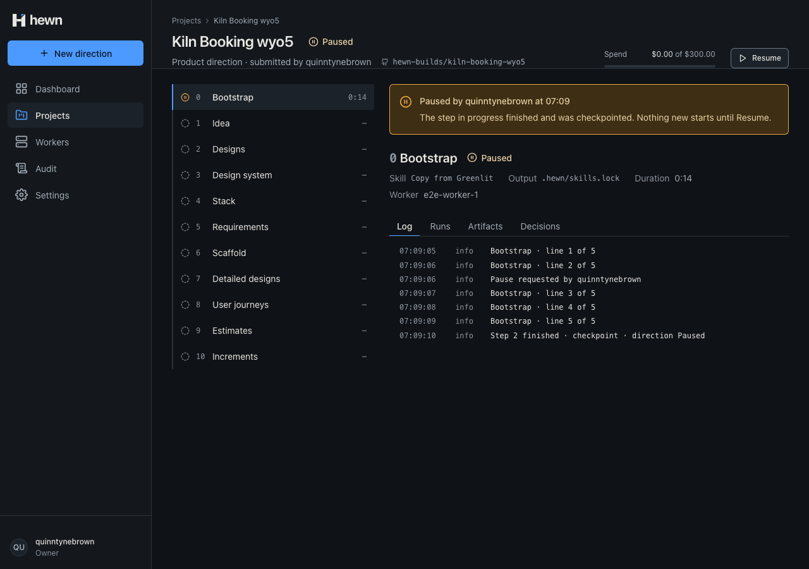
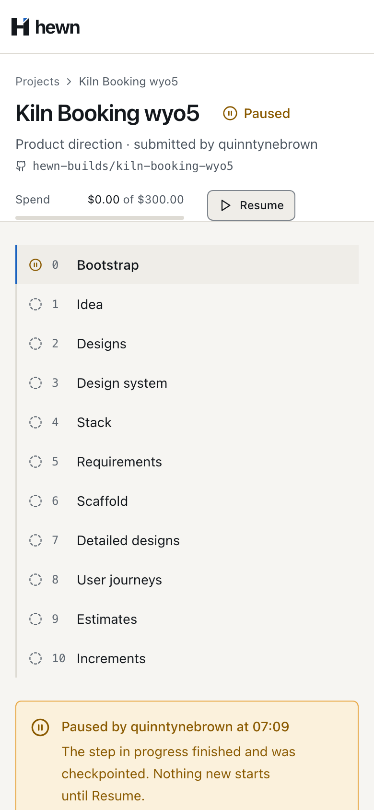
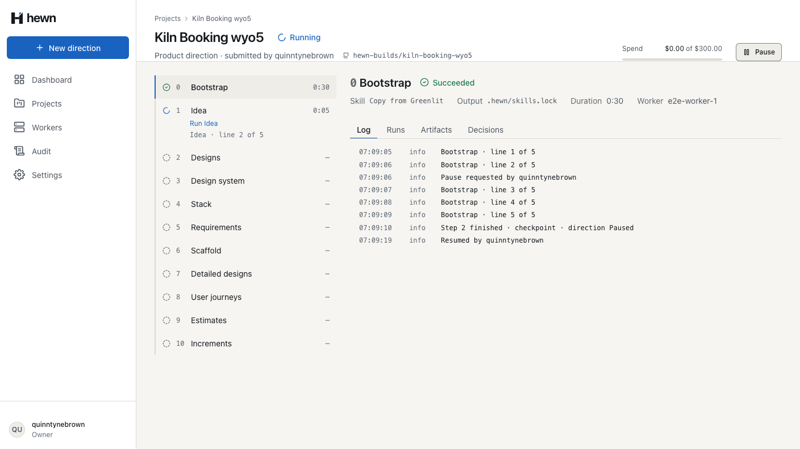
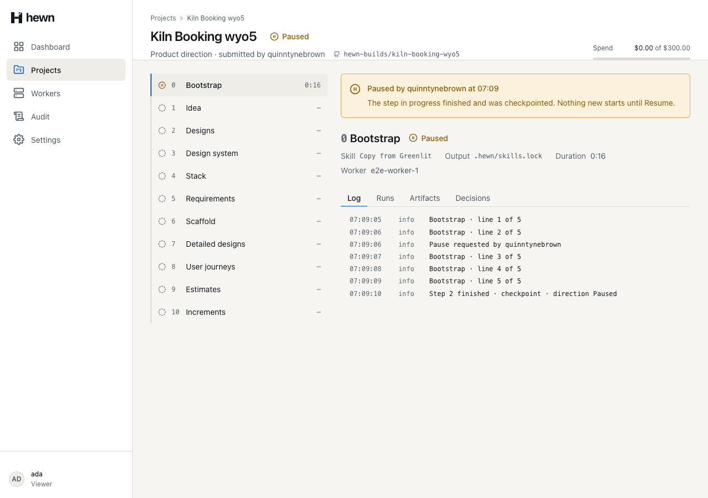

Stop after the step in hand, and carry on later without doing anything twice.



if (!direction.RequestPause(user.Login))
{
return DirectionControl.Result(direction);
}
var now = clock.GetUtcNow();
await events.AppendAsync(project.Id, PauseRequested, new { directionId = direction.Id, requestedBy = user.Login }, cancellationToken);
await RunLog.InfoAsync(db, events, run, $"Pause requested by {user.Login}", now, cancellationToken);
if (run.Status == RunStatus.Queued)
{
// No step is in progress, so there is nothing to wait for.
await pipeline.OnPauseTakesEffectAsync(run, project, direction, cancellationToken);
}
await db.SaveChangesAsync(cancellationToken);
await events.PublishAsync(cancellationToken);

// The step in progress has finished and is checkpointed: this is where the requested pause takes effect.
await events.LockAsync(run.ProjectId, cancellationToken);
var project = await db.Projects.Include(p => p.Directions).SingleAsync(p => p.Id == run.ProjectId, cancellationToken);
var direction = project.Directions.Single(d => d.Id == run.DirectionId);
var sha = command.Sha is null ? string.Empty : $" {command.Sha[..7]}";
await RunLog.InfoAsync(db, events, run, $"Step {command.Step} finished · checkpoint{sha} · direction Paused", now, cancellationToken);
await pipeline.OnPauseTakesEffectAsync(run, project, direction, cancellationToken);
await FencedSave.SaveAsync(db, cancellationToken);
await events.PublishAsync(cancellationToken);
return CheckpointVerdict.Pause;
await this.api.startStep(workerId, run, index + 1, steps[index]!.name);
await steps[index]!.execute(lease.signal);
if (lease.signal.aborted) return;
await logs.flush();
const verdict = await this.api.checkpoint(workerId, run, index + 1);
this.log('Checkpoint', { runId: run.runId, step: index + 1 });
if (verdict === 'Pause') {
// An Owner pressed Pause: Hewn has paused the direction at this checkpoint and released the lease.
this.log('Paused at a checkpoint; the run stops here', { runId: run.runId, step: index + 1 });
lease.abort(new Error('Paused at a checkpoint.'));
return;
}
public async Task OnResumedAsync(Run run, Project project, Direction direction, CancellationToken cancellationToken)
{
run.Resume();
if (direction.Resume(run.Stage) is { } stage)
{
await AppendStageAsync(direction, stage, cancellationToken);
}
await AppendDirectionAsync(direction, cancellationToken);
project.ChangeStatus(ProjectStatus.Running);
await AppendProjectAsync(project, cancellationToken);
}



// The step finishes and checkpoints; the answer tells the worker to stop there.
Assert.Equal("Pause", await VerdictAsync(await s.Worker.CheckpointAsync(run, 2)));
var project = await ProjectAsync(s.Owner, s.ProjectId);
Assert.Equal("Paused", project.GetProperty("status").GetString());
var direction = project.GetProperty("directions")[0];
Assert.Equal("Paused", direction.GetProperty("status").GetString());
Assert.Equal("Paused by an Owner", direction.GetProperty("pauseReason").GetString());
Assert.Equal("quinntynebrown", direction.GetProperty("pausedBy").GetString());
Assert.NotEqual(JsonValueKind.Null, direction.GetProperty("pausedAt").ValueKind);
Assert.False(direction.GetProperty("pauseRequested").GetBoolean());
Assert.Equal("Paused", direction.GetProperty("stages")[0].GetProperty("status").GetString());
// The lease is released and nothing new starts until Resume.
Assert.Equal(HttpStatusCode.Conflict, (await s.Worker.HeartbeatAsync(run)).StatusCode);
Assert.Null(await s.Worker.LeaseAsync());
it('finishes the step in progress, then starts no further step and reports no result', async () => {
api.enqueueStage(0, 0, 0);
api.checkpointVerdicts.push('Continue', 'Pause');
const executed: string[] = [];
void start(steps(4, executed));
await vi.advanceTimersByTimeAsync(2_000);
expect(executed).toEqual(['s0.1', 's0.2']);
expect(api.calls.filter((c) => c.method === 'step').map((c) => c.step)).toEqual([1, 2]);
expect(api.calls.filter((c) => c.method === 'checkpoint').map((c) => c.step)).toEqual([1, 2]);
expect(api.count('result')).toBe(0);
expect(logs).toContain('Paused at a checkpoint; the run stops here');
});
7 new, real API
3 and 11 new
Pipeline 14 · behaviour 15 · a11y 11 · visual 7
const bootstrapSteps = (await project.events())
.filter((e) => e.type === 'StepStarted' && e.payload['stage'] === 0)
.map((e) => e.payload['name']);
expect(bootstrapSteps, 'each Bootstrap step ran once, in order').toEqual([
'Prepare workspace',
'Run Bootstrap',
'Commit artifacts',
]);

